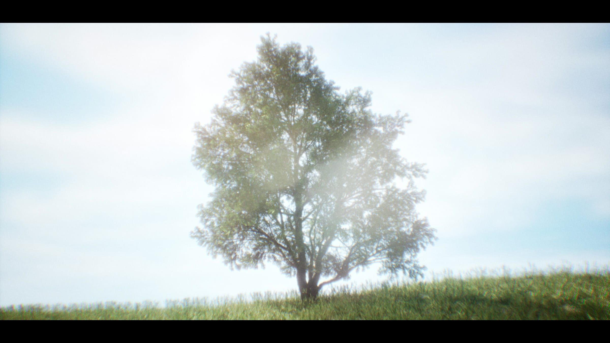
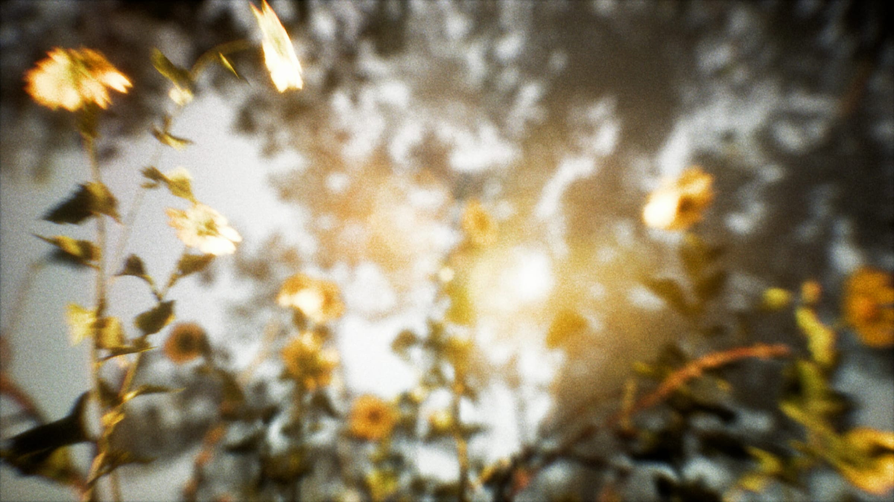
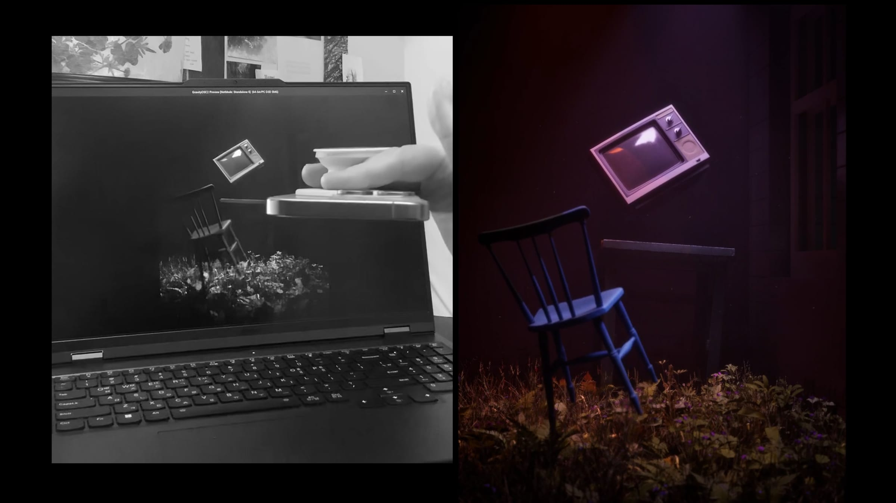
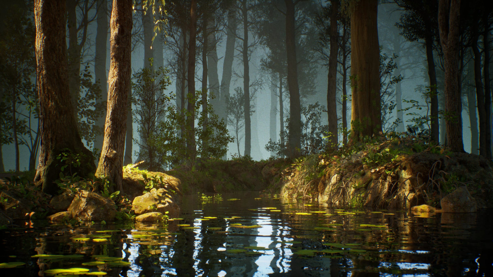
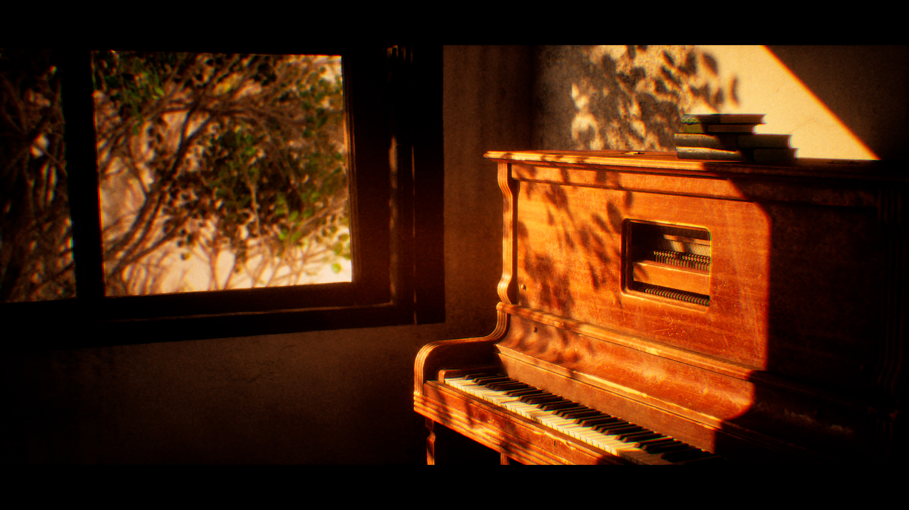
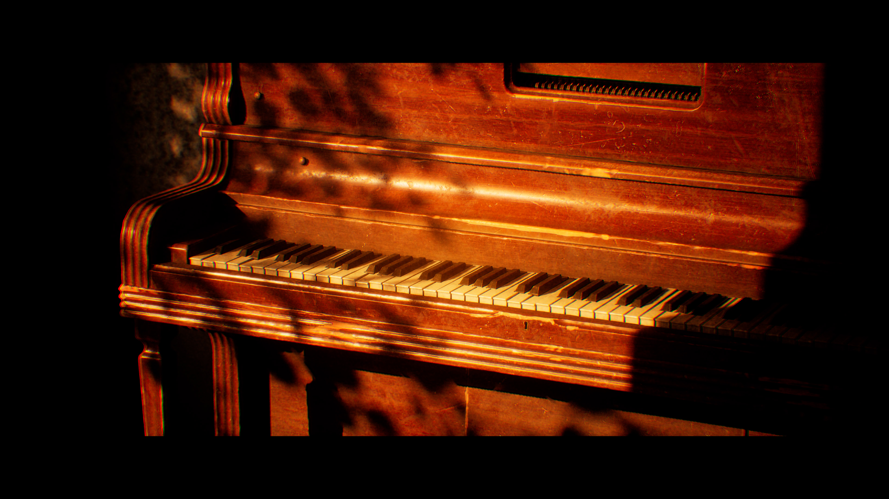
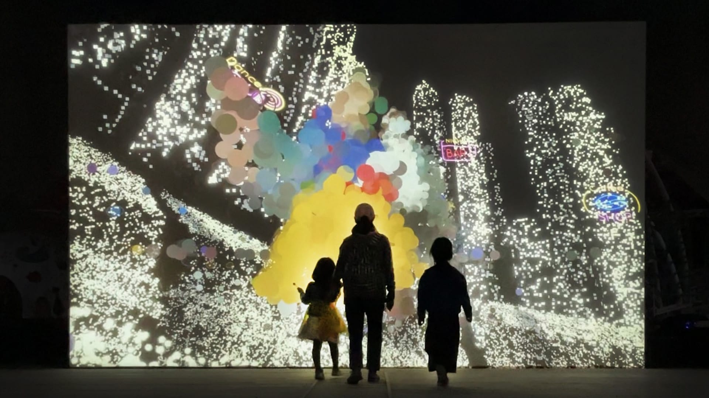
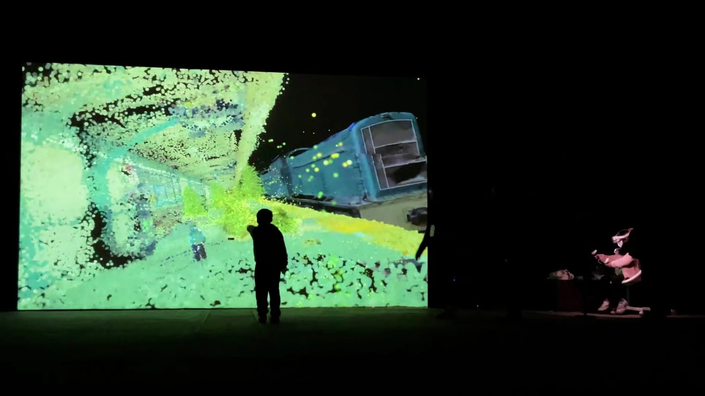

작업
01
Light Archive
- 01.1 설치
- 01.2 전시
- 01.3 인터랙티브
2025
Premiere, TouchDesigner

02
Aura of Heart
- 02.1 영상
2024
Arduino, 실시간 그래픽


03
Inside the Summer
- 03.1 영상
2024
Unity, 영상 스케줄링



04
Motion Blur
- 04.1 영상
2024
TouchDesigner, Unity

05
Scatty Dragger
- 05.1 인터랙티브
2024
Arduino, DMX



06
Soft Machine
- 06.1 영상
2024
Arduino, Unity

07
Sonic Veil
- 07.1 인터랙티브
2024
Max/MSP, TouchDesigner

08
The Focus of Sunset
- 08.1 영상
2024
Unreal Engine


09
The Forest
- 09.1 영상
2024
Processing, Python

10
The Piano Room
- 10.1 인터랙티브
2024
Unreal Engine, OSC, TouchOSC


11
The Piano Room
- 11.1 설치
- 11.2 인터랙티브
2024
Arduino, Unreal Engine, 센서



12
Volcandy
- 12.1 인터랙티브
2024
Unreal Engine, TouchDesigner


13
Layered City
- 13.1 인터랙티브
2023
Unity, 프로젝션

14
CAFE DIOR SEONGSU
- 14.1 인터랙티브
2022
Arduino, TouchDesigner


15
Fractal Memory
- 15.1 영상
2022
TouchDesigner, MadMapper

16
Gravity Well
- 16.1 설치
- 16.2 인터랙티브
2022
Unreal Engine, ZigSim

17
Current
- 17.1 인터랙티브
2021
Arduino, 시리얼 통신




18
Prism Field
- 18.1 영상
- 18.2 퍼포먼스
- 18.3 인터랙티브
2021
TouchDesigner, DMX

19
The Forest
- 19.1 설치
- 19.2 인터랙티브
- 19.3 프로젝션
2021
TouchDesigner, Kinect


20
Ghost Frequency
- 20.1 인터랙티브
2020
ESP32, TouchOSC

21
Code Landscape
- 21.1 인터랙티브
2018
Processing, OpenFrameworks

22
Mirror Phase
- 22.1 인터랙티브
2018
Kinect, TouchDesigner

23
Void Echo
- 23.1 인터랙티브
2018
Unreal Engine, Leap Motion

조건에 맞는 작업이 없습니다.